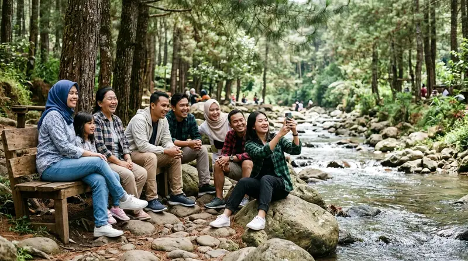

Aktivitas di Bedengan Malang meliputi berkemah, jalan santai di hutan pinus, fotografi, dan kegiatan kelompok, dengan catatan pengunjung menjaga keselamatan di sungai berbatu dan kebersihan kawasan.
Ringkasan Inti
- Kawasan Bedengan seluas sekitar 13,7 hektare, dengan hutan pinus dan aliran sungai.
- Kegiatan umum meliputi berkemah, jalan santai, fotografi, dan acara kelompok.
- Berenang di sungai tidak disarankan karena banyak bebatuan.
- Bawa pulang sampah dan hormati warga serta pengunjung lain.
- Kawasan ini juga menjadi objek penelitian dan edukasi lingkungan.
Apa saja aktivitas yang bisa dilakukan di Bedengan?
Aktivitas yang umum dilakukan di Bumi Perkemahan Bedengan Malang adalah berkemah, berjalan santai di hutan pinus, berfoto, memasak bersama, dan mengadakan kegiatan kelompok.
Skripsi Universitas Muhammadiyah Malang tahun 2024 mencatat luas kawasan Bedengan sekitar 13,7 hektare. Luas ini memberi ruang untuk jalan santai dan menikmati suasana hutan, meskipun area perkemahan sendiri hanya sekitar 2,5 hektare.
Pengunjung yang mencari ketenangan dapat memilih kegiatan sederhana seperti membaca, mengobrol, atau menikmati suara sungai. Penggemar fotografi dapat memanfaatkan cahaya yang menembus pohon pinus pada pagi hari. Kelompok pelajar, komunitas, dan organisasi dapat memanfaatkan area terbuka, aula, atau gazebo, tergantung ketersediaan dan izin pengelola.
Apakah Bedengan cocok untuk kegiatan kelompok dan edukasi?
Bumi Perkemahan Bedengan Malang cocok untuk kegiatan kelompok dan edukasi karena memiliki area terbuka, fasilitas dasar, serta lingkungan hutan yang dapat dijadikan sarana belajar.
Popbela menyebut fasilitas seperti aula dan gazebo tersedia di kawasan ini. Penyelenggara kegiatan perlu mengonfirmasi jadwal, kapasitas, dan aturan kepada pengelola sebelum acara. Hal ini penting agar kegiatan tidak mengganggu pengunjung lain.
Dari sisi edukasi, kawasan ini pernah dijadikan objek penelitian. Skripsi Universitas Muhammadiyah Malang tahun 2024 meneliti lumut kerak sebagai sumber belajar biologi dan bioindikator, sedangkan jurnal ITS tahun 2024 mengkaji partisipasi masyarakat dalam pariwisata berkelanjutan. Guru dan pembina dapat memanfaatkan hal tersebut sebagai inspirasi kegiatan pengenalan alam yang tidak merusak.

Menikmati kesejukan udara hutan pinus dan pemandangan aliran sungai Bedengan dengan aman.
Mengapa berenang di sungai Bedengan tidak disarankan?
Berenang di sungai Bumi Perkemahan Bedengan Malang tidak disarankan karena dasar sungai memiliki banyak batu besar dan kecil yang dapat menyebabkan cedera.
Popbela mencatat risiko tersebut secara khusus. Selain bebatuan, kondisi sungai dapat berubah setelah hujan karena debit air bisa naik dengan cepat. Permukaan batu juga licin sehingga mudah membuat pengunjung terpeleset.
Pengunjung dapat menikmati sungai dengan cara yang lebih aman, misalnya duduk di tepi yang stabil, membasuh tangan, atau memotret dari jarak aman. Anak-anak sebaiknya selalu didampingi orang dewasa. Jika hujan turun deras di area atas, segera jauhi sungai dan tunggu hingga kondisi aman.
Bagaimana menjaga keselamatan saat berkemah di Bedengan?
Menjaga keselamatan di Bedengan Malang berarti memilih lokasi tenda yang aman, membawa penerangan, mengawasi anak, mewaspadai cuaca, dan mengikuti arahan pengelola.
Pilih tanah datar yang tidak terlalu dekat dengan tepi sungai dan jauh dari dahan pohon yang rapuh. Pasang tenda dengan kuat, terutama jika angin kencang. Bawa headlamp, kotak P3K, dan obat pribadi.
Tentukan titik kumpul dan beri tahu semua anggota lokasi tenda. Hindari berjalan sendirian pada malam hari di jalur berbatu. Jika membawa kompor atau api, gunakan di area terbuka dan pastikan padam sepenuhnya. Simpan kontak pengelola dan nomor darurat setempat agar dapat dihubungi bila terjadi masalah.
Bagaimana menjaga kelestarian lingkungan selama berkemah?
Pengunjung Bumi Perkemahan Bedengan Malang menjaga kelestarian lingkungan dengan membawa pulang sampah, tidak merusak pohon, tidak mencoret fasilitas, dan menjaga ketenangan kawasan.
Kawasan hutan dan sungai sangat rentan terhadap sampah dan kerusakan. Prinsip sederhananya adalah meninggalkan lokasi lebih bersih daripada saat datang. Pisahkan sampah, bawa kantong tambahan, dan jangan membuang sisa makanan atau sabun ke sungai.
Hormati juga warga dan pengunjung lain dengan menjaga volume musik, terutama pada malam hari. Jurnal ITS tahun 2024 menempatkan keterlibatan masyarakat sebagai pilar pariwisata berkelanjutan di Bedengan. Pengunjung yang patuh aturan membantu menjaga manfaat wisata bagi warga setempat.
Untuk persiapan barang, baca panduan perlengkapan camping di Bedengan Malang yang wajib disiapkan.
FAQ
Cocok selama anak selalu didampingi, terutama di jalur berbatu dan dekat sungai. Pilih lokasi tenda yang aman dan siapkan pakaian hangat.
Umumnya memungkinkan, tetapi pengunjung perlu menghubungi pengelola untuk memastikan izin, jadwal, kapasitas, dan aturan yang berlaku.
Jauhi sungai, berlindung di tempat aman seperti gazebo atau aula bila tersedia, dan ikuti arahan pengelola. Jangan memaksakan aktivitas di area berbatu yang licin.